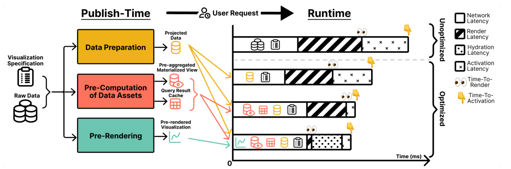
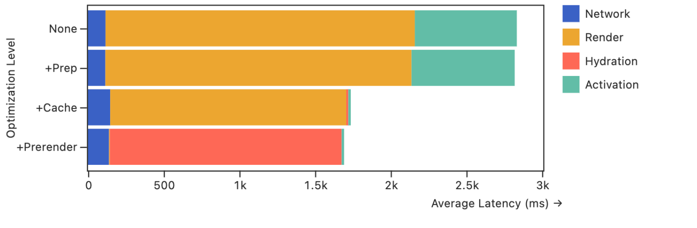
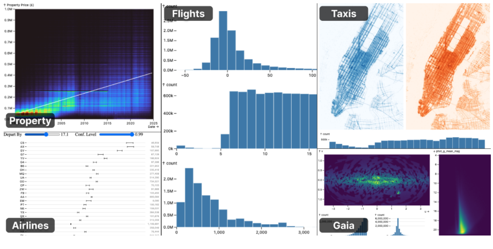
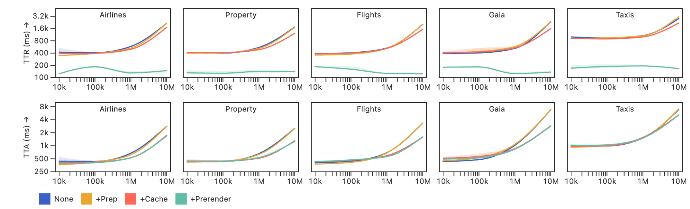

คำถามหลักที่ใช้จัดกรอบการอ่าน
- งานส่วนใดควรคำนวณก่อนเปิดเซสชัน?
- แคชกับภาพล่วงหน้าลด TTR และ TTA ต่างกันอย่างไร?
- ความเร็วที่ได้ต้องแลกกับพื้นที่และความสดของข้อมูลเท่าใด?
กรอบคำถามเพื่อวิเคราะห์ §1–3; บทความไม่ได้กำหนดหมายเลข RQ
การประมวลผลล่วงหน้าช่วงเผยแพร่: ย้ายงานเตรียมข้อมูล ผลคิวรี และภาพเริ่มต้นออกจากช่วงเปิดเว็บ เพื่อลดเวลารอเห็นภาพและเวลาจนพร้อมรับการโต้ตอบ
สามอัตราแรกเป็นผลของชุดรวม +most เทียบ none ข้ามรูปแบบภาพและขนาดข้อมูล ไม่ใช่ผลรับรองทุกกรณี
| ชื่อบทความ | Publish-Time Optimizations for Web-Based Visualizations |
|---|---|
| ผู้แต่ง | Ron Pechuk และ Jeffrey Heer |
| สถาบัน | University of Washington · Interactive Data Lab |
| งานประชุม | 2025 IEEE Visualization and Visual Analytics (VIS), pp. 226–230 |
| DOI | 10.1109/VIS60296.2025.00051 |
| โค้ดของ Mosaic | github.com/uwdata/mosaic · คลังต้นฉบับของสถาปัตยกรรม Mosaic |
| ไฟล์ที่ใช้ศึกษา | สำเนาผู้แต่ง 5 หน้า · ไม่ได้เปรียบเทียบรูปแบบกับ PDF ฉบับจัดพิมพ์ IEEE |
กรอบคำถามเพื่อวิเคราะห์ §1–3; บทความไม่ได้กำหนดหมายเลข RQ
สังเคราะห์จาก Abstract, §3–5 · PDF หน้า 1–4
คำจำกัดความยึดตามบทความ ส่วนอุปมาใช้ประกอบการทำความเข้าใจ ไม่ใช่รายละเอียดการทดลอง
| ศัพท์อังกฤษ | คำอ่านภาษาไทย | นิยาม | อุปมา / บริบท |
|---|
ไม่พบศัพท์ที่ตรงกับคำค้น
ที่มา: §2–4 · PDF หน้า 1–3 · เลขหน้าอ้างตำแหน่งหน้าในไฟล์ PDF ที่ได้รับ
การเปิดหน้าเว็บครั้งแรกยังต้องจ่ายต้นทุนคำนวณ แม้ระบบมีแคชสำหรับการโต้ตอบครั้งถัดไปแล้ว
ดาวน์โหลดข้อมูล รันคิวรีรวมกลุ่ม และวาดภาพบนเครื่องผู้ใช้งาน งานหนักขึ้นตามขนาดข้อมูลและจำนวนมุมมอง
แคชรันไทม์ต้องรอคิวรีแรกก่อนมีผลลัพธ์ใช้ซ้ำ การคำนวณช่วงเผยแพร่เตรียมจุดเริ่มต้นที่พร้อมกว่าได้
ภาพปรากฏช้าหรืออินพุตยังไม่ตอบสนองทำให้การสำรวจข้อมูลสะดุด งานที่เกี่ยวข้องรายงานผลต่อพฤติกรรมการวิเคราะห์
ที่มา: §1–2.2 · PDF หน้า 1–2 · เลขหน้าอ้างตำแหน่งหน้าในไฟล์ PDF ที่ได้รับ
แดชบอร์ดประวัติข้อมูล IoT อาจมีข้อมูลหลายล้านจุด การเตรียมผลรวมรายช่วงเวลาและภาพเริ่มต้นทำให้เห็นแนวโน้มก่อนโหลดข้อมูลสำหรับการกรองได้ แต่ข้อมูลสดที่เปลี่ยนถี่ต้องจัดการความสดและคิวรีรันไทม์เพิ่มเติม บทความนี้ไม่ได้ทดลองกับระบบเซนเซอร์

อ่าน YAML วิเคราะห์ข้อมูลและมุมมอง จำลองอินพุตเพื่อกระตุ้นคิวรีการโต้ตอบ
รันคิวรีเตรียมข้อมูล คิวรีเริ่มต้น และคิวรีผลรวม แล้วเก็บผลเป็นทรัพยากรเผยแพร่
แทนคิวรีเตรียมข้อมูลด้วยผลที่เก็บไว้ สร้างสคริปต์เติมแคช ฐานข้อมูล และเริ่มมุมมองโต้ตอบ
Coordinator โหลดผลคิวรีเข้าแคชและผลรวมเข้าฐานข้อมูล แล้วเลือกใช้แทนการคำนวณใหม่ กลไกนี้ใช้การควบคุมคิวรีของ Mosaic
เมื่อเปลี่ยนรูปแบบการเข้าถึงข้อมูล เช่น แทนคิวรีเตรียมข้อมูลด้วยไฟล์สำเร็จรูป Publisher แก้จุดอ้างอิงในข้อกำหนดโดยตรง
ต้นฉบับระบุ “ทรัพยากรผลคิวรีที่เผยแพร่ได้” และ JavaScript สำหรับเติมแคช แต่ไม่ได้แจกแจงว่าไฟล์ทั้งหมดเป็น Parquet หรือ Arrow จึงไม่กำหนดนามสกุลเป็นข้อเท็จจริงของการทดลอง
ที่มา: §3.2–3.4, §4.1–4.3 · PDF หน้า 2–3 · เลขหน้าอ้างตำแหน่งหน้าในไฟล์ PDF ที่ได้รับ
ส่งเนื้อหาที่วาดเสร็จ เช่น SVG หรือภาพบิตแมป ไม่มีอินพุตที่ทำงาน จึงไม่ต้องเพิ่มตรรกะรันไทม์เพื่อการโต้ตอบ
ส่งภาพเริ่มต้นพร้อม JavaScript แล้วเริ่มคอมโพเนนต์ผ่านกระบวนการเรนเดอร์ฝั่งไคลเอนต์ตามปกติ จึงยังมีต้นทุน hydration ก่อนพร้อมรับอินพุต

+cache ลด TTA เฉลี่ย 32.3% ส่วนชุดรวมลด 33.3% เมื่อเทียบ none เดียวกัน ผลต่าง 1.0 จุดเปอร์เซ็นต์คำนวณจาก Table 1 ภาพล่วงหน้าตัดงานวาดเริ่มต้น แต่ต้นทุน hydration ยังใกล้การเรนเดอร์เต็มชุด จึงไม่ทำให้พร้อมโต้ตอบทันที
Progressive Hydration ปรากฏในงานที่เกี่ยวข้อง (§2.3) ส่วนวิธี hydration ที่ละเอียดขึ้นเป็นข้อเสนอวิจัยต่อ (§5) ไม่ใช่กลไกที่ประเมินแล้วในงานนี้
ที่มา: §4.3, §5, Figure 4, Table 1 · PDF หน้า 3–4 · เลขหน้าอ้างตำแหน่งหน้าในไฟล์ PDF ที่ได้รับ


แต่ละระดับเพิ่มการปรับปรุงต่อจากระดับก่อนหน้า: none → +prep → +cache → +prerender ตารางต้นฉบับใช้ชื่อ +most สำหรับชุดรวมขั้นสุดท้าย
| ระดับ | ΔSC (%) | ΔTTR (%) | ΔTTA (%) |
|---|---|---|---|
| +prep | 0.0 ± 0.0 | −0.6 ± 4.0 | −1.0 ± 2.5 |
| +cache | 21.1 ± 29.8 | −16.6 ± 1.3 | −32.3 ± 8.9 |
| +most | 21.2 ± 29.9 | −83.7 ± 2.1 | −33.3 ± 9.6 |
พื้นที่เพิ่มเฉลี่ย 21.2% แต่ σ สูงถึง 29.9% จึงต้องพิจารณารูปแบบภาพและจำนวนมิติการเลือก แคชที่ไม่ถูกใช้งานอาจเพิ่มต้นทุนโดยไม่ช่วยเวลา
SC เป็นขนาดทรัพยากรที่เผยแพร่ ไม่ใช่ค่าการใช้ RAM สูงสุดหรือปริมาณข้อมูลที่ส่งทุกครั้ง
MacBook Pro 14 นิ้ว ปี 2021 · M1 Pro · RAM 16GB · macOS 15.2 · Node.js 22.9.0 · local server · DuckDB-WASM
บทความไม่ได้ระบุจำนวนรอบทดลองซ้ำ และ Figure 4 จำกัดที่ 10M แถว
เวลาเผยแพร่เฉลี่ยยาวกว่า TTA ของกรณีไม่ปรับปรุงที่สอดคล้องกัน 1,455.3 ± 1,779.0 ms ตัวเลขนี้เป็นผลต่างเวลา ไม่ใช่เวลาเผยแพร่ทั้งหมด
ที่มา: §5, Figures 2–4, Table 1 · PDF หน้า 3–4 · เลขหน้าอ้างตำแหน่งหน้าในไฟล์ PDF ที่ได้รับ
เวลาและ MB คำนวณจากฐานสมมติ แล้วใช้สัดส่วนเฉลี่ยจาก Table 1 แสดงผล ไม่มีข้อมูลดิบรายเงื่อนไขสำหรับสร้าง Figure 3 ซ้ำ แอนิเมชันใช้เวลาย่อส่วน ไม่ใช่เวลารับส่งจริง
พร้อมเริ่มการจำลอง
B = (จำนวนแถว / 10,000)0.72; TTR ฐาน = 180Bf ms; TTA ฐาน = 300Bf ms; SC ฐาน = จำนวนแถว × 40 / 1,000,000 MB โดย f = 1 / 1.3 / 1.5 / 2.2 / 2.6 สำหรับรูปแบบทั้งห้าตามลำดับ ทุกค่าฐานเป็นค่าที่กำหนดสำหรับสื่อการเรียน
ตัวคูณ TTR / TTA / SC: +prep = 0.994 / 0.990 / 1.000; +cache = 0.834 / 0.677 / 1.211; +most = 0.163 / 0.667 / 1.212 อิงค่าเฉลี่ย Table 1 ไม่ได้นำ SD มาสุ่มเป็นผลทดลอง และไม่ได้อ้างว่าทุกรูปแบบลดลงตามสัดส่วนเดียวกันจริง
ส่วนนี้ประเมินจุดเด่นและข้อจำกัดตามหลักฐาน พร้อมแยกบริบทต่อยอดออกจากผลที่ผู้วิจัยทดลองไว้
ที่มา: §3–6 · PDF หน้า 2–4; ข้อวิจารณ์จากขอบเขตหลักฐาน · เลขหน้าอ้างตำแหน่งหน้าในไฟล์ PDF ที่ได้รับ
ใช้ผลรวมประวัติข้อมูลและภาพเริ่มต้นที่เผยแพร่เป็นรอบ ส่วนข้อมูลสดต้องมีเส้นทางปรับปรุงและตรวจความสอดคล้องเพิ่ม
กระจายทรัพยากรใช้ซ้ำใกล้ผู้ใช้งาน แต่ต้องจัดรุ่นแคชและไม่คาดหวังให้ CDN ลดงาน hydration
ใช้ DuckDB-WASM ร่วมกับผลรวมล่วงหน้าเพื่อลดคิวรีเริ่มต้น ยังต้องประเมินขนาดทรัพยากรและภาระเครื่องปลายทาง
สามบริบทเป็นแนวคิดต่อยอด ไม่ใช่ระบบที่ผู้วิจัยทดสอบครบในบทความ · เชื่อมจาก §2.3, §3, §4.1, §6

เมื่อโฟกัสอยู่ในห้องซ้อม: Space เริ่ม/หยุด · ←/→ เปลี่ยนสไลด์ ปุ่มลัดไม่ทำงานระหว่างแก้ช่องกรอกข้อมูล
อ่านบทเรียนก่อนซ้อมจับเวลา เนื้อหาส่วนนี้ไม่ต้องพูดทั้งหมดใน 5 นาที ภาพ บทพูด และบทเรียนใช้สไลด์หน้าเดียวกัน
[บทความ] อยู่ใน PDF · [พื้นฐาน] ความรู้ประกอบ · [การวิเคราะห์] ตีความหลักฐาน · [อุปมา] แต่งเพื่ออธิบาย · [ตัวอย่างต่อยอด] ยังไม่ได้ทดสอบในบทความ
ความหมายและที่มาของแนวคิดเป็นพื้นฐาน ส่วนเหตุที่ใช้ในงานวิจัยมีหน้าอ้างอิง คำอ่านไทยใช้ช่วยสื่อสาร ไม่ใช่การยืนยันสำเนียงเจ้าของภาษา
ตอบด้วยความเข้าใจแล้วเทียบแนวตอบ ไม่จำเป็นต้องจำถ้อยคำตรงกัน
| สไลด์ | ช่วงเวลา | เวลา (s) | จำนวนคำ | บทพูด |
|---|
จำนวนคำแบ่งด้วย Intl.Segmenter ภาษาไทยเมื่อเบราว์เซอร์รองรับ เวลาแต่ละช่วงเป็นแผน ไม่ใช่เวลาพูดที่วัดจริง การเลื่อนอัตโนมัติไม่ตรวจจับเสียงพูด
15 ประเด็น แบ่งตามสถาปัตยกรรม ผลทดลอง และบริบทต่อยอด คำตอบระบุหน้า PDF และแยกข้ออนุมานไว้
บทพูดเต็ม (Markdown)คำถามประกอบการนำเสนอ (Markdown)
@inproceedings{pechuk2025publish,
author = {Ron Pechuk and Jeffrey Heer},
title = {Publish-Time Optimizations for Web-Based Visualizations},
booktitle = {2025 IEEE Visualization and Visual Analytics (VIS)},
year = {2025},
pages = {226--230},
publisher = {IEEE},
doi = {10.1109/VIS60296.2025.00051}
}